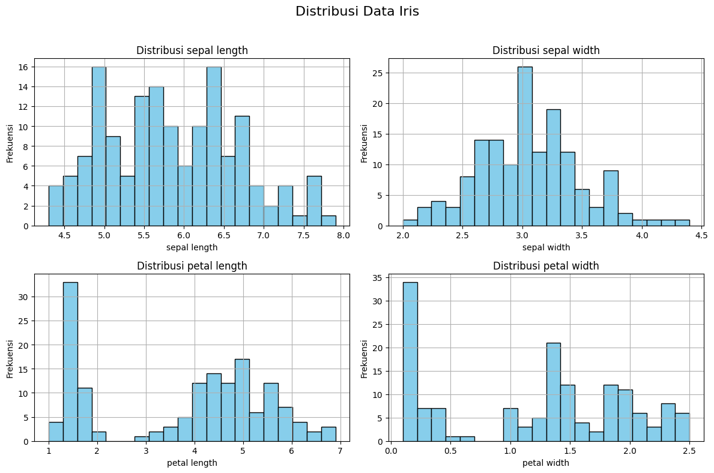

Data Understanding#
Data Gathering
Data Profiling
Data Exploration
Data Visualization
Data Type…#
%pip install pymysql psycopg2-binary sqlalchemy pandas python-dotenv matplotlib
Requirement already satisfied: pymysql in /opt/hostedtoolcache/Python/3.10.16/x64/lib/python3.10/site-packages (1.1.1)
Requirement already satisfied: psycopg2-binary in /opt/hostedtoolcache/Python/3.10.16/x64/lib/python3.10/site-packages (2.9.10)
Requirement already satisfied: sqlalchemy in /opt/hostedtoolcache/Python/3.10.16/x64/lib/python3.10/site-packages (2.0.38)
Requirement already satisfied: pandas in /opt/hostedtoolcache/Python/3.10.16/x64/lib/python3.10/site-packages (2.2.3)
Requirement already satisfied: python-dotenv in /opt/hostedtoolcache/Python/3.10.16/x64/lib/python3.10/site-packages (1.0.1)
Requirement already satisfied: matplotlib in /opt/hostedtoolcache/Python/3.10.16/x64/lib/python3.10/site-packages (3.10.1)
Requirement already satisfied: greenlet!=0.4.17 in /opt/hostedtoolcache/Python/3.10.16/x64/lib/python3.10/site-packages (from sqlalchemy) (3.1.1)
Requirement already satisfied: typing-extensions>=4.6.0 in /opt/hostedtoolcache/Python/3.10.16/x64/lib/python3.10/site-packages (from sqlalchemy) (4.12.2)
Requirement already satisfied: numpy>=1.22.4 in /opt/hostedtoolcache/Python/3.10.16/x64/lib/python3.10/site-packages (from pandas) (2.2.3)
Requirement already satisfied: python-dateutil>=2.8.2 in /opt/hostedtoolcache/Python/3.10.16/x64/lib/python3.10/site-packages (from pandas) (2.9.0.post0)
Requirement already satisfied: pytz>=2020.1 in /opt/hostedtoolcache/Python/3.10.16/x64/lib/python3.10/site-packages (from pandas) (2025.1)
Requirement already satisfied: tzdata>=2022.7 in /opt/hostedtoolcache/Python/3.10.16/x64/lib/python3.10/site-packages (from pandas) (2025.1)
Requirement already satisfied: contourpy>=1.0.1 in /opt/hostedtoolcache/Python/3.10.16/x64/lib/python3.10/site-packages (from matplotlib) (1.3.1)
Requirement already satisfied: cycler>=0.10 in /opt/hostedtoolcache/Python/3.10.16/x64/lib/python3.10/site-packages (from matplotlib) (0.12.1)
Requirement already satisfied: fonttools>=4.22.0 in /opt/hostedtoolcache/Python/3.10.16/x64/lib/python3.10/site-packages (from matplotlib) (4.56.0)
Requirement already satisfied: kiwisolver>=1.3.1 in /opt/hostedtoolcache/Python/3.10.16/x64/lib/python3.10/site-packages (from matplotlib) (1.4.8)
Requirement already satisfied: packaging>=20.0 in /opt/hostedtoolcache/Python/3.10.16/x64/lib/python3.10/site-packages (from matplotlib) (24.2)
Requirement already satisfied: pillow>=8 in /opt/hostedtoolcache/Python/3.10.16/x64/lib/python3.10/site-packages (from matplotlib) (11.1.0)
Requirement already satisfied: pyparsing>=2.3.1 in /opt/hostedtoolcache/Python/3.10.16/x64/lib/python3.10/site-packages (from matplotlib) (3.2.1)
Requirement already satisfied: six>=1.5 in /opt/hostedtoolcache/Python/3.10.16/x64/lib/python3.10/site-packages (from python-dateutil>=2.8.2->pandas) (1.17.0)
Note: you may need to restart the kernel to use updated packages.
import os
import pandas as pd
from sqlalchemy import create_engine
from dotenv import load_dotenv
import matplotlib.pyplot as plt
load_dotenv()
False
Data Gathering from MySQL and Postgres#
mysql_url = os.getenv("MYSQL_URL")
postgres_url = os.getenv("POSTGRES_URL")
# DB connection
mysql_engine = create_engine(mysql_url)
postgres_engine = create_engine(postgres_url)
# Get Data from sql and postgres
df_mysql = pd.read_sql("SELECT * FROM iris_mysql",mysql_engine)
df_postgres = pd.read_sql("SELECT * FROM iris_postgre",postgres_engine)
df_mysql.head()
| id | class | petal length | petal width | |
|---|---|---|---|---|
| 0 | 1 | Iris-setosa | 1.4 | 0.2 |
| 1 | 2 | Iris-setosa | 1.4 | 0.2 |
| 2 | 3 | Iris-setosa | 1.3 | 0.2 |
| 3 | 4 | Iris-setosa | 1.5 | 0.2 |
| 4 | 5 | Iris-setosa | 1.4 | 0.2 |
df_postgres.head()
| id | class | sepal length | sepal width | |
|---|---|---|---|---|
| 0 | 1 | Iris-setosa | 5.1 | 3.5 |
| 1 | 2 | Iris-setosa | 4.9 | 3.0 |
| 2 | 3 | Iris-setosa | 4.7 | 3.2 |
| 3 | 4 | Iris-setosa | 4.6 | 3.1 |
| 4 | 5 | Iris-setosa | 5.0 | 3.6 |
Data collection#
df_postgres = df_postgres.drop(columns=["class"]) # remove "class" col in dataframe postgreSQL
df_iris = df_mysql.merge(df_postgres, on="id")
df_iris.to_csv("iris_combined.csv", index=False) # convert file to scv
df_iris
| id | class | petal length | petal width | sepal length | sepal width | |
|---|---|---|---|---|---|---|
| 0 | 1 | Iris-setosa | 1.4 | 0.2 | 5.1 | 3.5 |
| 1 | 2 | Iris-setosa | 1.4 | 0.2 | 4.9 | 3.0 |
| 2 | 3 | Iris-setosa | 1.3 | 0.2 | 4.7 | 3.2 |
| 3 | 4 | Iris-setosa | 1.5 | 0.2 | 4.6 | 3.1 |
| 4 | 5 | Iris-setosa | 1.4 | 0.2 | 5.0 | 3.6 |
| ... | ... | ... | ... | ... | ... | ... |
| 145 | 146 | Iris-virginica | 5.2 | 2.3 | 6.7 | 3.0 |
| 146 | 147 | Iris-virginica | 5.0 | 1.9 | 6.3 | 2.5 |
| 147 | 148 | Iris-virginica | 5.2 | 2.0 | 6.5 | 3.0 |
| 148 | 149 | Iris-virginica | 5.4 | 2.3 | 6.2 | 3.4 |
| 149 | 150 | Iris-virginica | 5.1 | 1.8 | 5.9 | 3.0 |
150 rows × 6 columns
Descriptive Statistics:#
fitur = ["sepal length", "sepal width", "petal length", "petal width"]
stats = df_iris[fitur].agg(['mean', 'median', 'min', 'max'])
mode_values = df_iris[fitur].mode().iloc[0]
stats.loc['mode'] = mode_values
print(stats)
sepal length sepal width petal length petal width
mean 5.843333 3.054 3.758667 1.198667
median 5.800000 3.000 4.350000 1.300000
min 4.300000 2.000 1.000000 0.100000
max 7.900000 4.400 6.900000 2.500000
mode 5.000000 3.000 1.500000 0.200000
Data Visualization:#
fitur = ["sepal length", "sepal width", "petal length", "petal width"]
fig, axes = plt.subplots(2, 2, figsize=(12, 8)) # 2x2 layout
fig.suptitle("Distribusi Data Iris", fontsize=16)
for ax, col in zip(axes.flat, fitur):
df_iris[col].hist(bins=20, ax=ax, color='skyblue', edgecolor='black')
ax.set_title(f"Distribusi {col}")
ax.set_xlabel(col) # Label X
ax.set_ylabel("Frekuensi") # Label Y
plt.tight_layout(rect=[0, 0, 1, 0.96])
plt.show()
